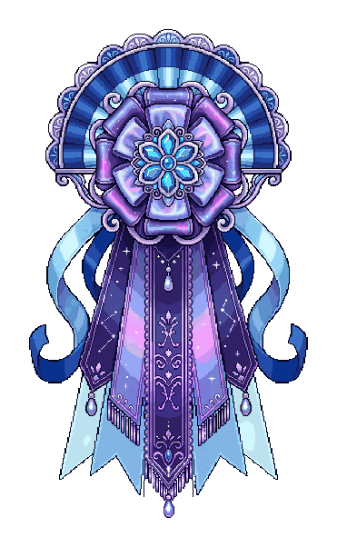

Quarter awards
Galaxy Gala · extended center ribbon
Rosewater Gala’s layered front rosette and embroidered tails, backed by Celestial Fanfare’s fan crest and longer pale-blue ribbons. Celestial’s blue flower brooch replaces the pearl cameo. Indigo, violet, nebula pink and silver fabric details. The central purple ribbon now extends a little below every other tail.
- Where it belongs
- Atlas/lore design library. Planned for end-of-quarter recognition; not installed in gameplay.
- Reward
- No reward assigned.
Artwork & reference notes
Descriptive design name only. The author has not chosen award reasons, order/class meanings, eligibility or rewards.
- Creator
- PixelLab, generated and revised at the author’s request
- Composition Job
- 54d7ed00-a2f7-437b-a6cd-f5c6ed2957b5
- Center Tail Inpaint Job
- 44d41d8f-aed6-417f-8ce1-813211bc0ff8
- Pixel Workbench Edit
- ccfc9e05-1fb2-45bc-b8bb-6e16a1d59d54
- Created
- 2026-10-29
- Transparent Margin Pixels
- 32
- Revision Scope
- Only the center-tail patch changed; every pixel outside that patch is preserved.